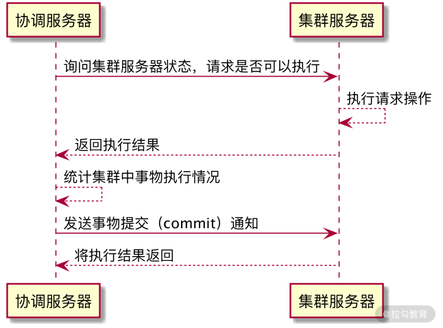
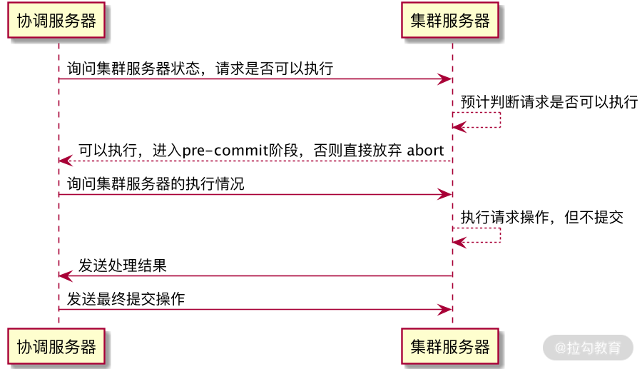

- 00 开篇词：选择 ZooKeeper，一步到位掌握分布式开发.md.html
- 01 ZooKeeper 数据模型：节点的特性与应用.md.html
- 02 发布订阅模式：如何使用 Watch 机制实现分布式通知.md.html
- 03 ACL 权限控制：如何避免未经授权的访问？.md.html
- 04 ZooKeeper 如何进行序列化？.md.html
- 05 深入分析 Jute 的底层实现原理.md.html
- 06 ZooKeeper 的网络通信协议详解.md.html
- 07 单机模式：服务器如何从初始化到对外提供服务？.md.html
- 08 集群模式：服务器如何从初始化到对外提供服务？.md.html
- 09 创建会话：避开日常开发的那些“坑”.md.html
- 10 ClientCnxn：客户端核心工作类工作原理解析.md.html
- 11 分桶策略：如何实现高效的会话管理？.md.html
- 12 服务端是如何处理一次会话请求的？.md.html
- 13 Curator：如何降低 ZooKeeper 使用的复杂性？.md.html
- 14 Leader 选举：如何保证分布式数据的一致性？.md.html
- 15 ZooKeeper 究竟是怎么选中 Leader 的？.md.html
- 16 ZooKeeper 集群中 Leader 与 Follower 的数据同步策略.md.html
- 17 集群中 Leader 的作用：事务的请求处理与调度分析.md.html
- 18 集群中 Follow 的作用：非事务请求的处理与 Leader 的选举分析.md.html
- 19 Observer 的作用与 Follow 有哪些不同？.md.html
- 20 一个运行中的 ZooKeeper 服务会产生哪些数据和文件？.md.html
- 21 ZooKeeper 分布式锁：实现和原理解析.md.html
- 22 基于 ZooKeeper 命名服务的应用：分布式 ID 生成器.md.html
- 23 使用 ZooKeeper 实现负载均衡服务器功能.md.html
- 24 ZooKeeper 在 Kafka 和 Dubbo 中的工业级实现案例分析.md.html
- 25 如何搭建一个高可用的 ZooKeeper 生产环境？.md.html
- 26 JConsole 与四字母命令：如何监控服务器上 ZooKeeper 的运行状态？.md.html
- 27 crontab 与 PurgeTxnLog：线上系统日志清理的最佳时间和方式.md.html
- 28 彻底掌握二阶段提交三阶段提交算法原理.md.html
- 29 ZAB 协议算法：崩溃恢复和消息广播.md.html
- 30 ZAB 与 Paxos 算法的联系与区别.md.html
- 31 ZooKeeper 中二阶段提交算法的实现分析.md.html
- 32 ZooKeeper 数据存储底层实现解析.md.html
- 33 结束语 分布技术发展与 ZooKeeper 应用前景.md.html
28 彻底掌握二阶段提交三阶段提交算法原理
在本节课的开篇中，我们已经提到过 ZooKeeper 在分布式系统环境中主要解决的是分布式一致性问题。而为什么会发生数据不一致的问题呢？是因为当网络集群处理来自客户端的请求时，其中的事务性会导致服务器上数据状态的变更。
为了保证数据变更请求在整个分布式环境下正确地执行，不会发生异常中断，从而导致请求在某一台服务器执行失败而在集群中其他服务器上执行成功，在整个分布式系统处理数据变更请求的过程中，引入了分布式事务的概念。
分布式事务
对于事务操作我们并不陌生，最为熟悉的就是数据库事务操作。当多个线程对数据库中的同一个信息进行修改的时候，为保证数据的原子性、一致性、隔离性、持久性，需要进行本地事务性操作。而在分布式的网络环境下，也会面临多个客户端的数据请求服务。在处理数据变更的时候，需要保证在分布式环境下的数据的正确完整，因此在分布式环境下也引入了分布式事务。
二阶段提交
二阶段提交（Two-phase Commit）简称 2PC ，它是一种实现分布式事务的算法。二阶段提交算法可以保证分布在不同网络节点上的程序或服务按照事务性的方式进行调用。
底层实现
正如算法的名字一样，二阶段提交的底层实现主要分成两个阶段，分别是询问阶段和提交阶段。具体过程如下图所示：
整个集群服务器被分成一台协调服务器，集群中的其他服务器是被协调的服务器。在二阶段算法的询问阶段，分布式集群服务在接收到来自客户端的请求的时候，首先会通过协调者服务器，针对本次请求能否正常执行向集群中参与处理的服务器发起询问请求。集群服务器在接收到请求的时候，会在本地机器上执行会话操作，并记录执行的相关日志信息，最后将结果返回给协调服务器。

在协调服务器接收到来自集群中其他服务器的反馈信息后，会对信息进行统计。如果集群中的全部机器都能正确执行客户端发送的会话请求，那么协调者服务器就会再次向这些服务器发送提交命令。在集群服务器接收到协调服务器的提交指令后，会根据之前处理该条会话操作的日志记录在本地提交操作，并最终完成数据的修改。
虽然二阶段提交可以有效地保证客户端会话在分布式集群中的事务性，但是该算法自身也有很多问题，主要可以归纳为以下几点：效率问题、单点故障、异常中断。
性能问题
首先，我们先来介绍一下性能问题。如我们上面介绍的二阶段算法，在数据提交的过程中，所有参与处理的服务器都处于阻塞状态，如果其他线程想访问临界区的资源，需要等待该条会话请求在本地执行完成后释放临界区资源。因此，采用二阶段提交算法也会降低程序并发执行的效率。
单点问题
此外，还会发生单点问题。单点问题也叫作单点服务器故障问题，它指的是当作为分布式集群系统的调度服务器发生故障时，整个集群因为缺少协调者而无法进行二阶段提交算法。单点问题也是二阶段提交最大的缺点，因此使用二阶段提交算法的时候通常都会进行一些改良，以满足对系统稳定性的要求。
异常中断
异常中断问题指的是当统计集群中的服务器可以进行事务操作时，协调服务器会向这些处理事务操作的服务器发送 commit 提交请求。如果在这个过程中，其中的一台或几台服务器发生网络故障，无法接收到来自协调服务器的提交请求，导致这些服务器无法完成最终的数据变更，就会造成整个分布式集群出现数据不一致的情况。
由于以上种种问题，在实际操作中，我更推荐使用另一种分布式事务的算法——三阶段提交算法。
三阶段提交
三阶段提交（Three-phase commit）简称 3PC ， 其实是在二阶段算法的基础上进行了优化和改进。如下图所示，在整个三阶段提交的过程中，相比二阶段提交，增加了预提交阶段。

底层实现
预提交阶段
为了保证事务性操作的稳定性，同时避免二阶段提交中因为网络原因造成数据不一致等问题，完成提交准备阶段后，集群中的服务器已经为请求操作做好了准备，协调服务器会向参与的服务器发送预提交请求。集群服务器在接收到预提交请求后，在本地执行事务操作，并将执行结果存储到本地事务日志中，并对该条事务日志进行锁定处理。
提交阶段
在处理完预提交阶段后，集群服务器会返回执行结果到协调服务器，最终，协调服务器会根据返回的结果来判断是否继续执行操作。如果所有参与者服务器返回的都是可以执行事务操作，协调者服务器就会再次发送提交请求到参与者服务器。参与者服务器在接收到来自协调者服务器的提交请求后，在本地正式提交该条事务操作，并在完成事务操作后关闭该条会话处理线程、释放系统资源。当参与者服务器执行完相关的操作时，会再次向协调服务器发送执行结果信息。
协调者服务器在接收到返回的状态信息后会进行处理，如果全部参与者服务器都正确执行，并返回 yes 等状态信息，整个事务性会话请求在服务端的操作就结束了。如果在接收到的信息中，有参与者服务器没有正确执行，则协调者服务器会再次向参与者服务器发送 rollback 回滚事务操作请求，整个集群就退回到之前的状态，这样就避免了数据不一致的问题。
结束
本节课我们主要学习了分布式系统下的分布式事务问题。由于分布式系统架构的特点，组成整个系统的网络服务可能分布在不同的网络节点或服务器上，因此在调用这些网络服务的过程中，会面临网络异常中断等不确定的问题，最终导致集群中出现数据不一致的情况。
为了保证数据的有一致性，我们引入了二阶段提交和三阶段提交算法。这两种算法都会将整个事务处理过程分成准备、执行、确认提交这几个阶段。不同的是，二阶段提交会因为网络原因造成数据不一致的问题，而三阶段提交通过增加预加载阶段将执行的事务数据保存到本地，当整个网络中的参与者服务器都能进行事务操作后，协调服务器会发送最终提交请求给参与者服务器，并最终完成事务操作的数据的修改。